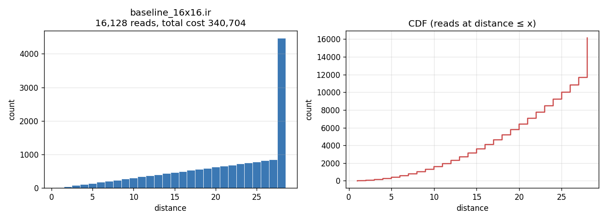
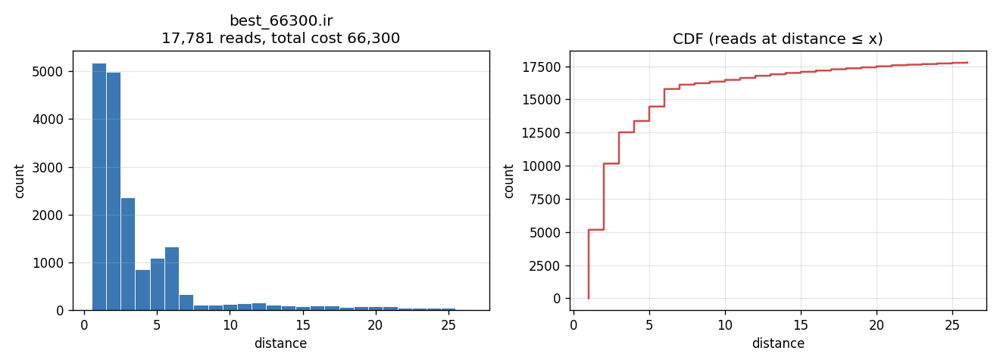

50,000 score units × 1 fJ/unit = 50,000 fJ = 5.0 × 10−11 J.
16 × 16 matrix multiplication · 4,096 MACs
One femtojoule per scored grid step.
Applied literally, the current 66,300-point record becomes a 66.3-picojoule synthetic movement term. It is a crisp measure of locality. It is not a measurement of the energy consumed by a complete matmul chip.
66.3 pJrecord score × exactly 1 fJ per operand-grid-step
5.14×lower movement term than the 340,704-point baseline
123.6TOPS/W-equivalent for this term alone across 8,192 conventional operations
Bottom line
The prototype is useful—and the label matters.
Use “movement-only proxy at 1 fJ per operand-grid-step.” The score captures the compiler win cleanly: more reads, placed dramatically nearer the ALU. Whole-device figures in the literature are mostly tens to thousands of times larger after optimistic per-operation normalization because they include some combination of arithmetic, SRAM endpoints, networks, control, clocks, leakage, conversion, and idle power.
80.54%reduction in the scored term
01 · Unit audit
The conversion is exact once the counted quantity is fixed.
The scorer charges each source-operand read and each final output read by ceil(sqrt(address)). The score is already the sum of those read charges. It should not be multiplied by a second “total distance” unless that second quantity has a documented, different definition.
Here, “grid-step” means the scorer’s one-way address-radius abstraction. It is not a trace of producer-to-consumer Manhattan routes, router hops, or physical millimetres of wire.
Eproxy = ε · S
ε = 1 fJ / (operand · grid-step)
S = Σpaid reads ceil(√address)
ε = 1 fJ / (operand · grid-step)
S = Σpaid reads ceil(√address)
550,000 traversed units × 1 fJ/unit = 550,000 fJ = 5.5 × 10−10 J.
Reconciliation required: 50,000 fJ and a total traversed distance of 550,000 cannot both follow the same 1 fJ/unit rule. If 50,000 is a normalized objective, publish the normalization equation and call it “score units,” not raw distance.
Conversion calculator
For a 16×16 GEMM, vendors conventionally count 2mnk = 8,192 operations. The repository executes 4,096 multiplies and 3,840 explicit adds.
02 · Compiler report
The optimizer bought locality with explicit copies.
Naive baseline340.704 pJ16,128 paid reads · average distance 21.125
Current record66.300 pJ17,781 paid reads · average distance 3.729
The record performs 10.25% more paid reads, entirely through 1,653 copies, while cutting average distance by 82.35%. The weighted total falls by 80.54%. This is precisely the kind of scheduling trade that a distance-sensitive compiler objective should expose.
{kind=link}

{kind=link}

Record instruction audit
| Instruction class | Count | Paid reads | Score / fJ |
|---|---|---|---|
| Multiply | 4,096 | 8,192 | 14,272 |
| Add | 3,840 | 7,680 | 26,209 |
| Copy | 1,653 | 1,653 | 21,565 |
| Output exit | — | 256 | 4,254 |
| Total | 9,589 | 17,781 | 66,300 |
What the score currently makes free
- 9,589 destination writes and their storage endpoints
- 4,096 multiplies and 3,840 additions
- initial placement of all 512 input elements
- addresses, requests, acknowledgements, and control traffic
- clocking, leakage, bandwidth limits, stalls, and time
The 66.3 pJ value therefore means “priced source-side movement under this abstract geometry,” not “energy at the wall” and not even “energy of the complete accelerator core.”
Record history under the 1 fJ rule
| Program | Score | Movement proxy | vs. baseline |
|---|---|---|---|
| 4×4 baseline | 1,316 | 1.316 pJ | — |
| 4×4 outer product | 800 | 0.800 pJ | 1.65× lower |
| 16×16 baseline | 340,704 | 340.704 pJ | 1.00× |
| 16×16 recursive | 237,456 | 237.456 pJ | 1.43× lower |
| 16×16 tiled | 133,783 | 133.783 pJ | 2.55× lower |
| 16×16 hierarchical | 80,217 | 80.217 pJ | 4.25× lower |
| 16×16 aliased | 69,697 | 69.697 pJ | 4.89× lower |
| 16×16 current record | 66,300 | 66.300 pJ | 5.14× lower |
Reproducibility: inspect the record report, submitted IR, machine-readable audit, or comparison CSV.
Precision is not a footnote
The verifier uses unbounded Python integers. Current inputs reach 256 and outputs reach 161,368, requiring 18 unsigned bits. An INT8 chip comparison is therefore a scale reference, not semantic equivalence. A hardware experiment should first choose uint8 modular, int8 × int8 → int32, or exact wide-integer semantics; that choice changes both arithmetic and transfer energy.
03 · Hardware literature
Published “energy per matmul” is rarely one comparable thing.
The table below converts each source’s reported efficiency to an 8192-operation energy equivalent. It answers: “If the published large-workload or peak pJ/op held for 8,192 useful ops, what energy scale would result?” It does not predict the energy of an isolated 16×16 launch.
Normalized energy scale
0.05 nJ1 nJ10 nJ100 nJ1,000 nJ
Logarithmic visual scale. These values mix scopes by design; the evidence badge and notes below identify what each number includes.
| Hardware / path | Architecture and published basis | Evidence | 8192-op equivalent | ÷ 66.3 pJ |
|---|---|---|---|---|
| Sutro record | Abstract one-ALU source-read distance; exact-integer verifier | chosen model | 0.0663 nJ | 1× |
| Intel 22FFL analog SRAM CIM | 8-bit activation × 8-bit weight charge-domain analog MVM macro; measured computation error <0.5%; 32.2 TOPS/W peak. Assumes TOPS counts multiply + add as two ops. | measured macro | 0.254 nJ | 3.84× |
| Apple M1 ANE | Fixed-function FP16 matrix engine; measured 0.37 pJ/FLOP optimum and about 0.5 pJ/FLOP sustained on saturated work. | measured engine | 3.03–4.10 nJ | 45.7–61.8× |
| Google TPUv1 | 256×256 systolic array; 86 TOPS achieved on CNN0 paired with 40 W incremental busy power. | workload / busy W | 3.81 nJ | 57.5× |
| Tesla FSD computer | Four broadcast 96×96 NNA grids across two chips; 144 TOPS and 72 W for the computer. | peak / system W | 4.10 nJ | 61.8× |
| NM-Carus | Non-systolic near-memory 8-bit SIMD; 6.8 pJ/MAC in 65 nm post-layout evaluation. | post-layout | 27.9 nJ | 420× |
| AMD MI300X FP32 vector | Conventional vector path; 163.4 TFLOP/s official peak and 750 W maximum TBP. | peak / TBP | 37.6 nJ | 567× |
| Eyeriss | Non-systolic row-stationary spatial array; 83.1 GMAC/s/W on measured convolution workload. | measured chip | 49.3 nJ | 743× |
| Graphcore C2 IPU FP32 | Distributed MIMD tiles with local SRAM and specialized AMP units; 18.9 TFLOP/s per-IPU GEMM peak divided by 150 W nominal per-IPU power. | throughput / nominal W | 65.0 nJ | 981× |
| NVIDIA H100 FP32 CUDA cores | Conventional SIMT path, not Tensor Cores; 60 TFLOP/s peak and 700 W TDP. | peak / TDP | 95.6 nJ | 1,442× |
| NVIDIA A100 FP32 CUDA cores | Non-Tensor-Core SGEMM; maximum 67.0 GFLOP/s/W over tested large shapes using device telemetry. | measured device | 122 nJ | 1,844× |
| Dual Xeon E5-2650v4 AVX2 FP32 | OpenBLAS n=5000 SGEMM; 5.92 GFLOP/J from CPU package counters. | measured package | 1.384 µJ | 20,872× |
The especially relevant non-systolic case: Tesla
not systolic
Tesla’s IEEE Micro paper is unusually explicit: each 96×96 MAC keeps its own local accumulator; 96-element activation and weight vectors are broadcast along rows and columns; there is no intra-array operand movement from MAC to MAC. Two 2 GHz NNAs deliver 72 TOPS per chip with INT8 inputs and 30-bit local accumulators.
Why it is still not apples-to-apples
The safe public power figure is for the entire two-chip computer: 144 raw aggregate TOPS at 72 W. Converting that ratio gives 4.096 nJ per 8,192 executed operations, but a lone 16×16 multiply cannot fill even one 96×96 array. Both SoCs normally duplicate the same inference for safety, so normalizing by unique useful work would double that energy. This is an efficiency-scale comparison, not a tiny-call measurement.
The Hot Chips slide also shows a 15 W NNA bar, but its scope is not explicit enough to use as a per-chip energy denominator.
Repeated 16×16 measurements show the utilization cliff
A 2012 study reports energy and elapsed time for a window of 1,000 repeated 32-bit 16×16 multiplies. Dividing its table values by 1,000 gives 17.62 µJ on a Cyclone II systolic FPGA, 20.11 µJ on a Clarkdale Core i5, and 34.79 µJ on a Pineview Atom per multiply. These are old platforms and software stacks, not modern efficiency targets. The CPU figures subtract idle power, while the FPGA measurement excludes regulator loss. The experiment is still valuable because it shows why scaling large-GEMM TOPS/W down to 8,192 operations can miss small-call reality by orders of magnitude.
17.62 µJCyclone II FPGA
60.02 µs average · systolic implementation · 265,762× the proxy
20.11 µJIntel Core i5
3.90 µs average · MATLAB/LAPACK · 303,318× the proxy
34.79 µJIntel Atom
41.4 µs average · MATLAB/LAPACK · 524,736× the proxy
Modern fixed-function engines have the same qualitative issue: the Apple ANE study reports roughly a 0.23 ms host/firmware dispatch floor and a separate engine-rail reading near 0.9 W for tiny matmuls. Their rough cross-product is 207 µJ, not a measured complete-event energy and not evidence that an exact 16×16 shape is supported. Saturated pJ/op and isolated-call joules answer different questions.
How to read the evidence badges
measured means workload power or energy was reported, but its scope can still be a macro, accelerator, device, or CPU package. peak / power divides a throughput figure by a TDP, TBP, nominal, or system-power figure; it is not measured energy. modeled denotes post-layout or a deliberately chosen coefficient. None of these scopes are interchangeable.
04 · 8K INT8 extrapolation
A scalable Sutro schedule lands at 119 mJ. Blackwell B200 estimates 244 mJ.
For a full square C[8192×8192] = A[8192×8192] · B[8192×8192], the workload is 549,755,813,888 MACs, or 1,099,511,627,776 conventional operations. The numbers below assume INT8 inputs and INT32 accumulation/output for the hardware comparison.
0.119 Jretuned scalable Sutro schedule at 1 fJ per scored grid-step; movement only
0.244 JNVIDIA B200: 4.5 dense POPS at 1,000 W; peak/TDP estimate
7.92 JNVIDIA Rubin: preliminary 250 dense TOPS at a stated 1,800 W/GPU assumption
“8K model” is ambiguous. This section computes a synthetic full 8192³ GEMM. One-token autoregressive decode usually multiplies a 1×8192 activation by an 8192×8192 weight matrix—8,192× less arithmetic—and is much more likely to be memory-bound, so its energy cannot be obtained by simply dividing these joules by 8,192.
How the 0.118953 J Sutro estimate was derived #
This is an exact score for one parameterized schedule family, followed by the chosen 1 fJ/unit conversion. It is not the 66,300-point 16×16 record multiplied by a scale factor.
The checked-in 66,300-point record is a final physical-address program specialized to 16×16; it has no generator that can be rerun at 8K. Cubically scaling 66,300 gives 8.90 mJ, but incorrectly freezes average access distance while the live memory footprint grows. Instead, the calculation generalizes the repository’s sa_cache loop nest to N = 8192 and searches every tile pair whose dimensions divide N.
1 · Generalize the schedule
For every output tile (bi,bj) and reduction index k, load Tj B values into sB. Then stream each of the Ti A values through one near-ALU sA cell, multiply across the B strip, and accumulate a Ti×Tj output tile in sC.
2 · Retune for the larger footprint
Because 8192 = 213, it has 14 divisors. Evaluating all 14×14 = 196 legal Ti,Tj pairs selects 256×128. The formula reproduces the checked-in 16×16 sa_cache score of 73,602 at its original 8×4 tiles.
The sweep is exhaustive within this literal two-parameter sa_cache family, not across all possible matmul algorithms. The next two shapes are 128×128 at 121,105,737,911,286 and 256×64 at 121,681,290,169,654 score units. The 8K result is evaluated in closed form; it does not materialize a trillion-scale IR.
Exact scorer equation
Let d(a)=ceil(sqrt(a)) be the cost of reading address a, and let D(R) be the sum of d(a) over every address in region R. Cells are packed by descending reads per cell—sA, TMP, sB, sC, A, B, C—which is optimal for this fixed schedule because d(a) never decreases with address.
S = N³d(1) + N²(N−1)d(2)
+ (N³/Tj)D(sB) + (N³/(TiTj))D(sC)
+ (N/Tj)D(A) + (N/Ti)D(B) + D(C)
D([l,h]) = F(h) − F(l−1)
F(x) = q(q+1)(4q−1)/6 + (x−q²)(q+1), q = floor(√x)
+ (N³/Tj)D(sB) + (N³/(TiTj))D(sC)
+ (N/Tj)D(A) + (N/Ti)D(B) + D(C)
D([l,h]) = F(h) − F(l−1)
F(x) = q(q+1)(4q−1)/6 + (x−q²)(q+1), q = floor(√x)
Substituting N = 8192, Ti = 256, and Tj = 128 gives this exact ledger:
| Region and address range | Cells | Paid reads / cell | Score units | At 1 fJ/unit |
|---|---|---|---|---|
sA · 1 | 1 | 549,755,813,888 | 549,755,813,888 | 0.000550 J |
TMP · 2 | 1 | 549,688,705,024 | 1,099,377,410,048 | 0.001099 J |
sB · 3–130 | 128 | 4,294,967,296 | 4,514,010,628,096 | 0.004514 J |
sC · 131–32,898 | 32,768 | 16,777,216 | 66,997,983,379,456 | 0.066998 J |
| A bulk · 32,899–67,141,762 | 67,108,864 | 64 | 23,475,391,008,000 | 0.023475 J |
| B bulk · 67,141,763–134,250,626 | 67,108,864 | 32 | 21,448,665,777,152 | 0.021449 J |
| C exit · 134,250,627–201,359,490 | 67,108,864 | 1 | 867,899,704,694 | 0.000868 J |
| Total | 201,359,490 | 2,205,465,706,496 total reads | 118,953,083,721,334 | 0.1189530837 J |
The last step is only the proposed unit conversion: 118,953,083,721,334 × 10⁻¹⁵ J = 0.118953083721334 J. No throughput or clock rate is used, so the model produces energy but does not produce time. Arithmetic, destination writes, finite SRAM/HBM capacity, data conversion, control, clocks, and leakage remain unpriced.
| Schedule | Scaling treatment | Score units | Movement term | vs. naive |
|---|---|---|---|---|
| 66,300 record × n³ | Fixed-distance local-kernel lower bound; not a generated 8K program | 8,898,635,366,400 | 0.008899 J | 2,630× lower |
Retuned sa_cache | Exact analytic score, 256×128 tiles; formula reproduces the checked-in 16×16 program | 118,953,083,721,334 | 0.118953 J | 196.7× lower |
| Retuned square tiles | 64×64 tiles | 317,312,291,631,114 | 0.317312 J | 73.7× lower |
| Fixed 4×4 tiles | Literal generalization of the small tiled schedule | 2,136,290,066,409,474 | 2.13629 J | 11.0× lower |
| Naive baseline | Exact closed form under the scorer | 23,401,284,397,481,984 | 23.4013 J | 1× |
The naive placement grows as Θ(n4). A size-retuned locality schedule is approximately Θ(n3.5) because the scorer’s ceil(sqrt(address)) distance grows with the footprint. The selected schedule averages 53.94 score units per paid read; its 0.118953 J is 108.2 fJ per conventional operation, or 9.24 TOPS/W-equivalent for movement alone.
Blackwell and Rubin: what the official INT8 tables imply #
Blackwell · B200
0.244 JNVIDIA’s formal B200 datasheet reports 9 sparse INT8 POPS and says dense is half: 4.5 dense POPS. At the maximum 1,000 W TDP, ideal runtime is 0.244 ms and peak/TDP energy is 0.244 J—2.05× the Sutro movement-only term.
Roofline-style estimate, not measured kernel energy or a strict bound. Structured-sparse 9 POPS is deliberately not used.
Rubin · preliminary
7.92 JNVIDIA currently lists 250 dense INT8 TOPS per Rubin GPU. Combining that with the datasheet’s 1,800 W/GPU application-model assumption gives 4.398 ms and 7.916 J—66.6× the Sutro movement-only term.
The 1,800 W figure is an application-comparison assumption, not a formally labeled TDP. Rubin specifications are preliminary.
The Rubin result is intentionally counterintuitive. The same preliminary product table emphasizes 50 PFLOPS NVFP4 and 17.5 PFLOPS FP8, but those formats are not interchangeable with exact INT8×INT8→INT32 work. A 72-GPU rack cross-check—18 dense INT8 POPS at 136 kW provisioned power—gives 8.31 J per GEMM when amortized across 72 simultaneous GEMMs. It is consistent with, but does not measure, the 7.92 J per-GPU estimate.
SKU names matter: NVIDIA’s current Blackwell Ultra B300 table lists only 153.5 dense INT8 TOPS and up to 1,100 W, which implies 7.88 J. That is radically different from B200’s 0.244 J and reflects the published legacy-INT8 specification—not a general claim that B300 or Rubin is less efficient on its target FP4/FP8 workloads.
Four bytes and four bits are different Blackwell paths #
Taking “four byte” literally means FP32: four bytes per matrix element. NVIDIA publishes 75 TFLOP/s FP32 for one HGX B200 GPU. The same FP32 storage can enter the much faster TF32 Tensor Core path, but TF32 reduces multiply precision. NVFP4 is the other common reading: four bits, or half a byte, plus block-scale metadata.
Literal 4-byte FP32
14.66 J75 TFLOP/s at the 1,000 W maximum TDP gives 14.660 ms and 14.660 J—123× the Sutro movement-only term.
If “4-bit” was intended
0.122 J9 dense PFLOP/s NVFP4 at the same 1,000 W gives 0.1222 ms and 0.1222 J. This has different numerical semantics and excludes quantization, scaling, and conversion work.
| Stored input / math path | Published dense rate | Minimum logical data | Ideal time | Peak/TDP energy |
|---|---|---|---|---|
| NVFP4 · 4-bit block-scaled | 9 PFLOP/s Tensor Cores | 64 MiB inputs, plus scales and higher-precision output | 0.1222 ms | 0.1222 J |
| INT8 · 1 byte | 4.5 POPS Tensor Cores | 384 MiB with INT32 output | 0.2443 ms | 0.2443 J |
| TF32 math · FP32 storage | 1.1 PFLOP/s Tensor Cores | 768 MiB for FP32 A, B, and C | 0.9996 ms | 0.9996 J |
| FP32 · literal 4 bytes | 75 TFLOP/s FP32 | 768 MiB for FP32 A, B, and C | 14.660 ms | 14.660 J |
All four B200 rows divide the same 1.0995 trillion conventional operations by NVIDIA’s published dense rate and multiply by the 1,000 W maximum TDP. They are matched roofline-style estimates, not measured per-precision power. FP32/TF32 traffic assumes C=A·B without reading a prior C matrix. For B300’s 1,100 W maximum TDP, the corresponding strict-FP32 and TF32 estimates are 16.13 J and 1.10 J; its per-GPU dense-FP4 figure gives 0.086 J.
8K comparison with evidence boundaries #
0.118953 J
Provenance of the Sutro row below: the exact 8K sa_cache score is 118,953,083,721,334 units after an exhaustive 196-pair tile sweep selects 256×128. Multiplying that score by the chosen 1 fJ/unit coefficient yields 0.118953 J. This is a movement-only model result—not measured chip energy and not a throughput/TDP estimate.
Read the complete derivation and score ledger above · Direct table permalink: #eightk-comparison
| Hardware or model | Published or modeled basis | Evidence | Ideal / derived time | Energy |
|---|---|---|---|---|
Sutro retuned sa_cache | Exact score at 1 fJ per operand-grid-step | movement only | not modeled | 0.11895 J |
| NVIDIA B200 Blackwell | 4.5 dense POPS; 1,000 W maximum TDP | peak / TDP | 0.244 ms | 0.244 J |
| AMD MI300X | 2,614.9 dense INT8 TOPS; 750 W maximum TBP | peak / TBP | 0.420 ms | 0.315 J |
| NVIDIA H100 SXM | 1,979 dense INT8 TOPS; 700 W maximum TDP | peak / TDP | 0.556 ms | 0.389 J |
| Google TPUv1 | 92 dense INT8 TOPS; 40 W typical incremental busy power | peak / busy W | 11.95 ms | 0.478 J |
| Tesla FSD, one chip | 72 INT8 TOPS; 40 W upper TDP; includes 96×96 edge padding | peak / TDP | 15.51 ms | ≈0.620 J |
| NVIDIA T4, pre-transformed layout | Exact 8192³ cuBLASLt graph-read ≈95 TOPS at measured 70 W card power | exact-size proxy | ≈11.57 ms | ≈0.81 J |
| Sutro endpoint sensitivity | 2.5 fJ × (S + 160R) on the retuned schedule | movement + reads | not modeled | 1.180 J |
| NVIDIA T4, standard layout | Exact 8192³ including required device-side layout transformation; ≈55 TOPS at 70 W | exact-size proxy | ≈19.99 ms | ≈1.40 J |
| AMD VCK190 AutoMM | Measured repeated 16K INT8 energy/op applied to 8K work | size-scaled proxy | 39.06 ms | 2.38 J |
| NVIDIA A100 cuBLAS | Measured repeated 16K INT8: 67.2 TOPS at 248.08 W; same energy/op applied to 8K | size-scaled proxy | 16.36 ms | 4.06 J |
| NVIDIA B300 Blackwell Ultra | 153.5 dense INT8 TOPS; 1,100 W maximum TDP | peak / TDP | 7.16 ms | 7.88 J |
| NVIDIA Rubin | 250 dense INT8 TOPS; 1,800 W/GPU application-model assumption | preliminary | 4.40 ms | 7.92 J |
| Sutro naive baseline | Exact closed-form scorer extrapolation | movement only | not modeled | 23.40 J |
Only the T4 rows use an exact 8192³ published run paired with measured card power—and even those joules are derived from a graph-read throughput. No primary source located reports integrated exact-8K INT8 kernel joules for B200, B300, Rubin, H100, MI300X, TPUv1, or Tesla FSD. Their rows are roofline-style estimates, not measurements.
Two INT8 inputs occupy 128 MiB and an INT32 output another 256 MiB, for at least 384 MiB of logical device traffic. Sutro’s widthless, unbounded 2-D memory charges none of the HBM transfers, writes, arithmetic, clocks, leakage, or dispatch. Also, the repository verifier currently uses unbounded Python integers, so this hardware table is a scale comparison rather than semantic equivalence.
Reproducibility: download the 8K comparison CSV, inspect the machine-readable derivations, or run the standalone scaling script.
05 · Calibration and extension
Distance optimization survives. Absolute energy needs more terms.
The 1 fJ coefficient is best treated as a transparent hypothesis. It answers “what if link movement costs 1 fJ per operand-grid-step?” It does not calibrate SRAM activation, arithmetic, or the physical length and width of a wire.
Sensitivity to the earlier endpoint-offset idea
| Model | Baseline | Record | Improvement | Interpretation |
|---|---|---|---|---|
1 fJ × S | 340.704 pJ | 66.300 pJ | 5.14× | pure scored movement |
2.5 fJ × (S + 160R) | 7.30296 nJ | 7.27815 nJ | 1.0034× | movement plus fixed cost for every paid read |
The second model charges 400 fJ of fixed endpoint energy per paid read. Because the record intentionally performs more reads, that term nearly erases its distance advantage. This does not prove that either calibration is correct; it proves that read count and read distance must remain separately visible.
Etotal = NMACeMAC + Σlevels(Nreaderead + Nwriteewrite)
+ Σlinks(bits · hops · ebit-hop) + Pleakt
+ Σlinks(bits · hops · ebit-hop) + Pleakt
Arithmetic sanity check
Horowitz’s illustrative 45 nm table assigns about 0.2 pJ to an 8-bit multiply and 0.03 pJ to an 8-bit add. The repository’s 4,096 multiplies plus 3,840 adds would therefore be about 934.4 pJ for arithmetic alone—14.1× the record movement proxy. It is an era- and precision-specific scale marker, not a modern chip prediction.
Physical calibration path
Use CACTI or characterized SRAM macros for endpoint reads/writes; extracted interconnect or router models for bit-hops; a synthesis/library estimate for arithmetic; and measured or simulated time for leakage. Name the transfer width: fJ/(operand·step) is abstract, while fJ/(bit·mm) or fJ/(byte·hop) is physically interpretable.
What a stronger compiler report should export
| Layer | Counts to retain | Closest established analogue |
|---|---|---|
| Sutro now | paid reads, read role, address tier, weighted distance, instruction counts | one unicast movement action class |
| Next compiler schema | reads and writes by memory level, operand bits, source→destination hops, multicast fanout, cycles | Timeloop statistics |
| Energy binding | energy per read/write/MAC/router/link action, with technology and voltage metadata | Accelergy ERT |
| Mapping exploration | reuse, buffer capacity, NoC traffic, latency, bandwidth | MAESTRO |
| Silicon validation | instructions, requests, sectors, cache/DRAM bytes, duration, sampled energy | Nsight Compute / PCM / RAPL |
XLA’s “cost” is semantic FLOPs and bytes; TVM’s cost model generally predicts schedule latency; Timeloop’s counts are actions; Accelergy turns actions into modeled joules. Keeping those namespaces separate prevents an attractive unit conversion from acquiring more physical meaning than it has.
06 · Sources and method
Primary sources, explicit derivations.
All hardware conversions use one MAC = two conventional operations: 8,192 operations at n = 16 and 1,099,511,627,776 operations at n = 8,192. Reported sparse peaks were excluded. Values marked measured retain the source’s measurement boundary; peak/TDP values are explicitly labeled derived. Sources were reviewed 28 August 2026.
- Sutro scorer implementation and 66,300 record audit.
- Reproducible 8K closed-form scorer and the report’s derivation audit.
- NVIDIA B200 Blackwell datasheet, B300 Blackwell Ultra datasheet, and the current HGX specification table.
- NVIDIA Vera Rubin preliminary specifications, datasheet, and rack-power analysis.
- Exact 8192³ INT8 T4 study (DOI).
- AutoMM measured INT8 efficiency on A100 and VCK190.
- Tesla FSD computer, IEEE Micro; Hot Chips 31 slides.
- In-Datacenter Performance Analysis of a TPU.
- NVIDIA H100 Tensor Core GPU datasheet.
- A100 matmul power measurement study.
- AMD Instinct MI300X datasheet.
- Dissecting the Graphcore IPU Architecture.
- Apple Neural Engine reverse-engineering and energy study.
- Eyeriss row-stationary accelerator.
- NM-Carus near-memory SIMD accelerator.
- Intel 22FFL analog SRAM compute-in-memory macro.
- Energy efficiency of matrix multiplication on CPUs and GPUs.
- Direct 16×16 CPU/FPGA energy study.
- Horowitz, computing’s energy problem.
- CACTI memory and interconnect model.
- Timeloop, Accelergy, and MAESTRO.
Limitations: no cited chip implements the exact Sutro abstract machine or verifier contract. Published energy varies with matrix shape, data values, sparsity, placement, voltage/frequency, batching, and measurement scope. The normalized table is a scale comparison, not a ranking of products.